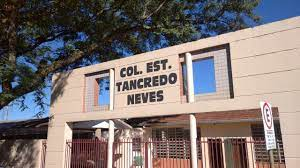

Colégio Estadual Tancredo Neves

- O Colégio Estadual Tancredo Neves – Ensino Fundamental Médio e Profissionalizante está localizado na cidade de São João, onde atende 849 alunos da Rede Estadual de Ensino. Atende alunos do 6º ao 9º ano do Ensino Fundamental , Curso Técnico em Administração e Ensino Médio, além de projetos em contra turno como CELEM Espanhol, Edutech, aulas de Xadrez e reforço para alunos com dificuldade de aprendizagem. O horário de funcionamento são período da manhã, tarde e noite.
- Por:Julia Debona